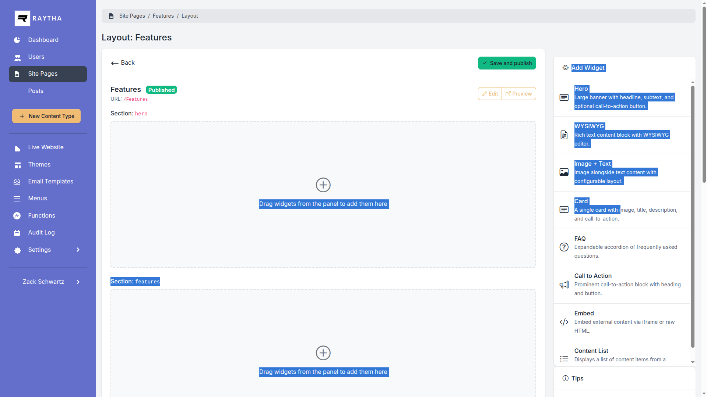
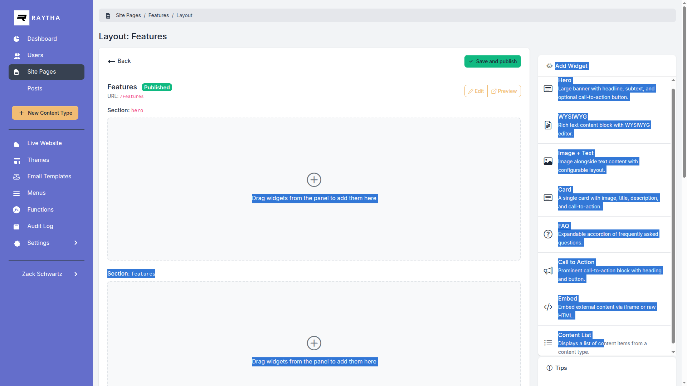

Widgets are the building blocks of Site Pages. Learn how to configure each widget type to create engaging page layouts.

Large banner sections perfect for page headers and key messaging.

| Headline | Main title text |
| Subheadline | Supporting text below the headline |
| Background Color | Hex color (e.g., #0d6efd) |
| Text Color | Hex color for text |
| Button Text | Call-to-action button label |
| Button URL | Button link destination |
| Button Style | primary, secondary, light, dark |
| Alignment | left, center, right |
| Min Height | Minimum height in pixels |
Rich text content blocks with full formatting support.

| Content | Rich text editor for formatted content |
| Padding | none, small, medium, large |
The WYSIWYG editor includes formatting tools for:
Bordered content cards ideal for features, services, or highlighted content.
| Title | Card heading |
| Description | Card body text |
| Image URL | Optional image at top of card |
| Button Text | Optional button label |
| Button URL | Button link destination |
| Button Style | primary, secondary, outline-primary, etc. |
Call-to-action sections to encourage user engagement.

| Headline | Main CTA text |
| Content | Supporting description |
| Button Text | Action button label |
| Button URL | Button destination |
| Button Style | Button visual style |
| Background Color | Section background hex color |
| Text Color | Text hex color |
| Alignment | left, center, right |
Dynamically display content items from any content type.
| Headline | Section title |
| Subheadline | Section description |
| Content Type | Which content type to pull from |
| Page Size | Number of items to display |
| Display Style | cards or compact |
| Show Image | Display featured images |
| Show Date | Display creation dates |
| Show Excerpt | Display content preview |
| Link Text | "View All" link text |
| Link URL | "View All" destination |
Use consistent colors across widgets. Note your brand colors as hex values (e.g., #0d6efd for blue).
Widget templates are designed to be responsive. Preview your pages on mobile to verify the layout.
Keep headlines short and impactful. Use subheadlines for additional context.
Available button styles match Bootstrap classes:
primary - Bluesecondary - Graylight - Light gray/whitedark - Dark gray/blackoutline-primary - Blue outline